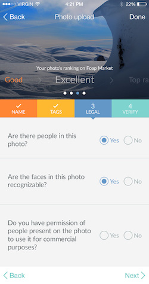
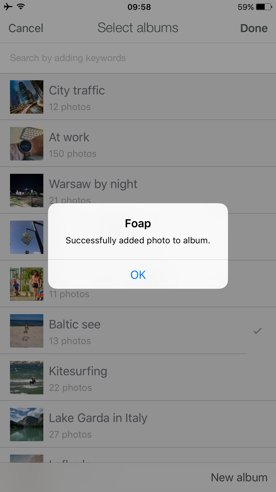

Foap 藏得真深：5 个大多数人用了一年都没发现的收益翻倍技巧
Foap 不只是拍照片卖钱的 App，它还藏着 Albums 被动佣金、Visibility 等级机制、标签分层策略等一系列冷门玩法。本文把这些隐藏功能逐个挖出来，告诉你哪些真能让收益翻倍、哪些可以无视。
你以为 Foap官网 就是个随手拍几张日常照片、等品牌买家来挑的被动平台？其实它还藏着好几个能让收益翻倍的冷门玩法——我翻遍了 App 每个角落、啃完了社区里的老外分享帖，把这些大多数人用了一两年都没碰过的功能整理出来。
第一个：Albums 策展佣金——被动收入的秘密入口
这个功能藏得真深。大多数人从 Foap下载 装了 App、只知道上传照片到 Market 等买家来买，但很少有人知道，你不一定非要拍照片才能从 Foap 赚钱。
Foap 有个 Albums 功能——简单说就是"策展"。你可以把别人已经上传到 Market 的照片组织成一个主题相册，比如"北欧风厨房"、"城市街拍光影"、"亲子周末日常"，发布后这个相册就有了自己的独立页面。重点来了：当买家通过你的 Album 页面发现并购买某张照片时，你能拿到 $0.25 的佣金。
这钱不多，但它是完全被动的。你花半小时创建一个主题精准、标签到位的 Album，里面精选 20 张热门照片——只要这 20 张里每张每月被通过你的 Album 买一次，就是 $5/月。创建 10 个这样的 Album，就是 $50/月，而且创建完就不用管了。
更骚的操作：你自己的 Market 照片也可以加进你自己的 Album。当买家通过你的 Album 买到你自己的照片时，你拿 Market 的 $5 + Album 佣金的 $0.25 = $5.25，比别人多赚 5%。
但这里有个容易踩的坑：只有买家"实际经过"的那个 Album 能拿到佣金。同一张照片可以同时在 A、B、C 三个人的 Album 里，但买家从 A 的 Album 点进去买走，佣金只有 A 拿，B 和 C 一分没有。这意味着创建 Album 时标签和主题要足够精准——否则买家搜不到你的 Album，就不会经过你，佣金自然没你的份。

第二个：Visibility Status 等级——搜索排序背后的隐形推手
你上传了 100 张照片，为什么有的被搜到几百次、有的只有个位数浏览？Foap 没公开过它的搜索算法，但社区里的老卖家们总结出了排序优先级的第一条规则——Visibility Status 等级。
Foap 会给每张照片自动评级：Top Ranked > Excellent > Good > Low > Very Low。这个等级直接决定了照片在搜索结果里的位置——Top Ranked 永远排在 Excellent 前面，Excellent 永远在 Good 前面，以此类推。90% 的成交来自搜索，所以你的照片进不了 Excellent 以上，基本等于没被看见。
问题是：这个等级怎么来的？Foap 没说，但从社区反馈推断，它和这几个因素强相关：照片的社区评分（其他 Foap 用户给你打星）、标签的完整度、照片的真实感（越不像广告片分越高）。新上传的照片会有一点点初始流量倾斜，但很快就被评级压下来了。
实操建议：每次上传新照片后，先主动给社区里其他人的照片打星评分——这是 Foap 社区的基础互动，也是让别人回过来给你打分的最有效方式。评分高了，等级自然往上走，搜索排名跟着上，成交概率倍增。
第三个：买家搜索的标签分层策略——别再随便打标签了
我之前上传照片时标签都是随便打的：拍了一张厨房的照片，就打个 "kitchen" "food" 完事。后来去 Foap文档 里翻买家搜索逻辑才明白，标签的打法直接决定了被谁搜到、被多少人搜到。
Foap 的主要买家是品牌营销团队和广告公司（Heineken、MasterCard、NIVEA 这些都是常客），他们找素材不是瞎搜，而是带着明确的主题需求来的。比如某品牌做"亲子周末"活动，需要 20 张不同风格的亲子照片，会同时搜 "family weekend" "kids park" "father daughter" 这一堆相关词组。
正确的标签打法是分层覆盖，一个主体从四个维度打标签：
- 主体词：照片里是什么（kitchen, cooking, chef, food preparation）
- 风格词：什么风格（minimalist, nordic, modern, white）
- 氛围词：什么感觉（cozy, warm, home, domestic）
- 动作词：在做什么（chopping, preparing, mixing）
- 补充词：光线、时间（daylight, natural light, morning）
这样买家搜任何一个角度都能搜到你的照片。搜 "nordic kitchen interior" → 你在前；搜 "cooking morning light" → 你也在前；搜 "minimalist home decor" → 还是你。别嫌麻烦，这是让照片从"个位数浏览"变成"每天有人看"的分水岭。

第四个：提现时的汇率损耗——PayPal 汇率差每年可能吞掉你几百块
Foap 本身在提现环节不额外收费——你账户里的收益是多少，发起提现到 PayPal 就是多少。但 PayPal 作为支付管道会在两个环节收费：接收资金（如果是商业账号）和提现到银行卡。
真正容易被忽略的是汇率损耗。Foap 用美元结算，如果你绑的是非美元银行卡（人民币、欧元、英镑），PayPal 会在 PayPal → 银行环节做货币换算，汇率通常比银行公开汇率差 1%~3%。Mission 奖金动辄 $500，3% 的汇率损耗就是 $15，Market 每笔 $5 看起来不多，但一年累积下来也很可观。
有个办法可以规避：如果你有 PayPal 多币种账户，可以设置让美元直接进到多币种账户里，不收换汇费。然后通过其他渠道（比如 TransferWise 或者 PayPal 好友转账）把美元换成人民币，汇率损耗能降到 0.5% 以内。没有多币种账户的话就只能接受了——这是 PayPal 的赚钱方式，所有用户都得承担。
第五个：Profile 里不能留外部链接——最容易踩的违规坑
这个不是收益技巧，是防踩坑提醒。Foap 用 Jumio 做身份验证、反盗图，但很多人不知道它还有一套自动监控账号违规的系统。我见过好几个老玩家账号被删，其中一个原因就是在 Profile 简介里贴了自己的 Instagram 或个人网站链接。
Foap 社区规则明确禁止在评论区或个人资料里发外部链接——它认为这是在导流，属于破坏社区公平的行为。触发的后果从警告、临时冻结到直接删号都有可能，具体取决于违规严重程度和历史记录。
其他容易触发违规的情况：上传从网上找的非原创照片被举报、为了拿 Commercial 授权撒谎说照片里没有品牌/人物、长期不活跃被清理。预防比事后恢复重要得多——如果账号被删但里面还有没提现的收益，要第一时间发邮件到 support@foap.com，附上账号邮箱说明情况，越早联系越好。
最后
Foap 这套玩法的核心逻辑其实很朴素：上传照片是基础操作，评级、标签、Albums 才是让收益从"零花"变"收入"的关键杠杆。别嫌麻烦——Albums 创建完就被动赚钱，标签分层多花 5 分钟能让搜索曝光翻十倍，Visibility 等级上去后成交概率直接翻倍。把它用透，Foap 就不是"随便拍拍"的休闲 App，而是一套真正能跑起来的素材变现流水线。上面提到的那些隐藏入口和数据口径，是我把 GitHub、Gitee、GitCode 三个仓库里的 Foap 资料翻了个遍才确认的细节，国内访问哪个顺手就去哪个。